Chapter 5 Data summary
5.1 Plot category sample distribution
We assign indices to each of the warning categories as follows. The “major” categories are categories with more rigorous sample sizes, so their analysis results are more reliable. Subsequent analysis steps focus on these major categories.
- 1 =
N - 2 =
A - 3 =
AE - 4 =
AP - 5 =
AEP - 6 =
AE+ - 7 =
AEP+ - 8 =
AP+ - 9 =
E+ - 10 =
A+ - 11 =
E
category_labels <- c("1"="N",
"2"="A",
"3"="AE",
"4"="AP",
"5"="AEP",
"6"="AE+",
"7"="AEP+",
"8"="AP+",
"9"="E+",
"10"="A+",
"11"="E")Now we plot the amount of samples in each category, in a bar chart.
# Used to dictate the patters used for the bars in each category
category_patterns <- c(
"N"="none",
"A"="stripe",
"AE"="none",
"AP"="stripe",
"AEP"="none",
"AE+"="stripe",
"AEP+"="none",
"AP+"="stripe",
"E+"="none",
"A+"="stripe",
"E"="none"
)
# Colors assigned to each category
category_colors <- c(
"1"="#40004b",
"2"="#762a83",
"3"="#9970ab",
"4"="#c2a5cf",
"5"="#e7d4e8",
"6"="#f7f7f7",
"7"="#d9f0d3",
"8"="#a6dba0",
"9"="#5aae61",
"10"="#1b7837",
"11"="#00441b"
)
ggplot(df, aes(x=category, fill=factor(category))) +
theme_default(base_family="sans", base_size=14) +
theme(legend.position="bottom") +
guides(fill=guide_legend(title=NULL,
override.aes=list(
pattern=category_patterns
))) +
geom_bar_pattern(color="#000000F0",
linewidth=0.5,
position=position_dodge(preserve="single"),
pattern_fill="black",
pattern_angle=45,
pattern_density=0.1,
pattern_spacing=0.025,
pattern_key_scale_factor=0.6,
pattern=category_patterns) +
scale_x_discrete(labels=NULL) +
scale_fill_manual(labels=category_labels, values=category_colors) +
labs(title="Distribution of samples", x="", y="Count") +
geom_hline(yintercept=1:6 * 5, alpha=0.2) +
scale_y_continuous(breaks=1:6 * 5)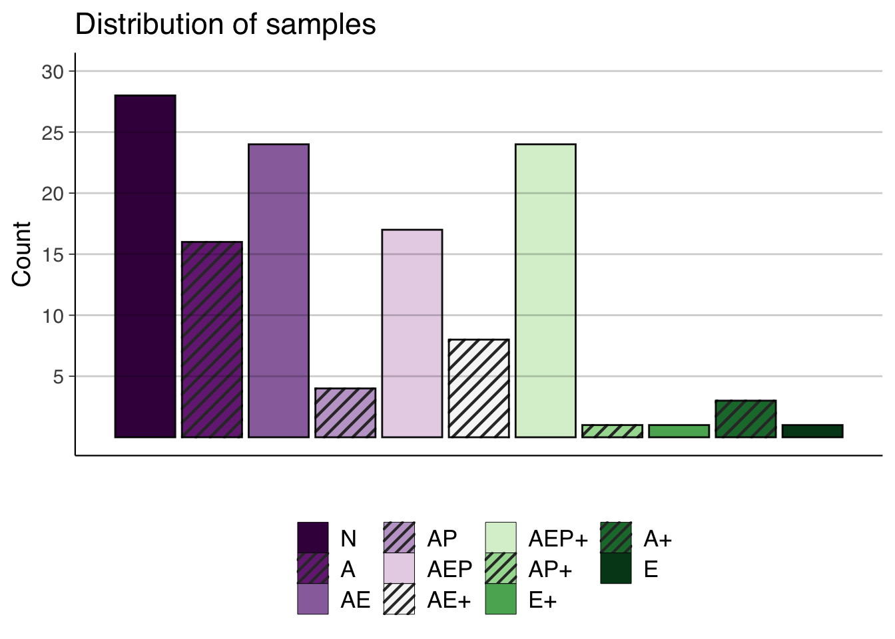
The bars will be ordered according to the different categories, and color coded.
5.2 Prepare for metric summary plots
To provide summary plots for the various metrics, we will define a helper function that produces color-coded bar plots. Here we will only include the major categories.
plot_barplot <- function(data, x, y) {
ggplot(data,
aes(x=x,
y=y,
fill=factor(category))) +
theme_default(base_family="sans", base_size=14) +
theme(legend.position="bottom") +
guides(fill=guide_legend(title=NULL)) +
geom_col(color="#000000F0", linewidth=0.5) +
scale_x_discrete(labels=NULL) +
scale_fill_manual(labels=c("1"="N",
"2"="A",
"3"="AE",
"5"="AEP",
"7"="AEP+"),
values=c("1"="#7b3294",
"2"="#c2a5cf",
"3"="#f7f7f7",
"5"="#a6dba0",
"7"="#008837"))
}
major_samples_barplot <- function(data, metric) {
plot_barplot(data, reorder(data$name, data$category), metric)
}
major_category_summary_barplot <- function(data, metric) {
plot_barplot(data, data$category, metric)
}Additionally, we will need to create a new data frame where the samples that do not belong any of the major categories are excluded.
df_major = df[df$category %in% major_categories, ]5.3 Category overview plots
This section includes plots that illustrate general traits of samples across the major categories.
5.3.1 LOC per sample
major_samples_barplot(df_major, df_major$loc) +
labs(title="Overview of all major samples", x="Samples", y="LOC") +
geom_hline(yintercept=1:7 * 100000, alpha=0.2) +
scale_y_continuous(breaks=1:7 * 100000)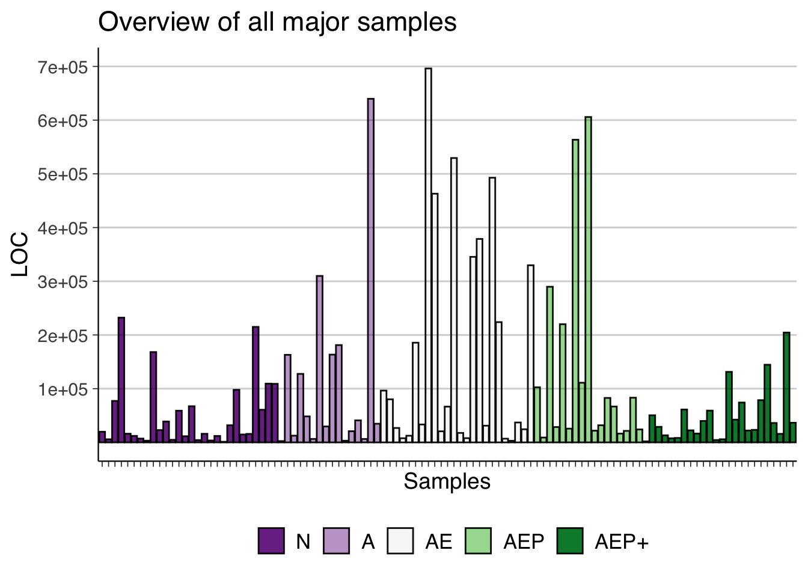
5.3.2 LOC per category
loc_per_category <- aggregate(loc ~ category, df_major, mean)
loc_per_category$category <- factor(loc_per_category$category)
major_category_summary_barplot(loc_per_category, loc_per_category$loc) +
labs(title="Mean LOC per category", x="Categories", y="LOC") +
geom_hline(yintercept=1:9 * 20000, alpha=0.2) +
scale_y_continuous(breaks=1:9 * 20000)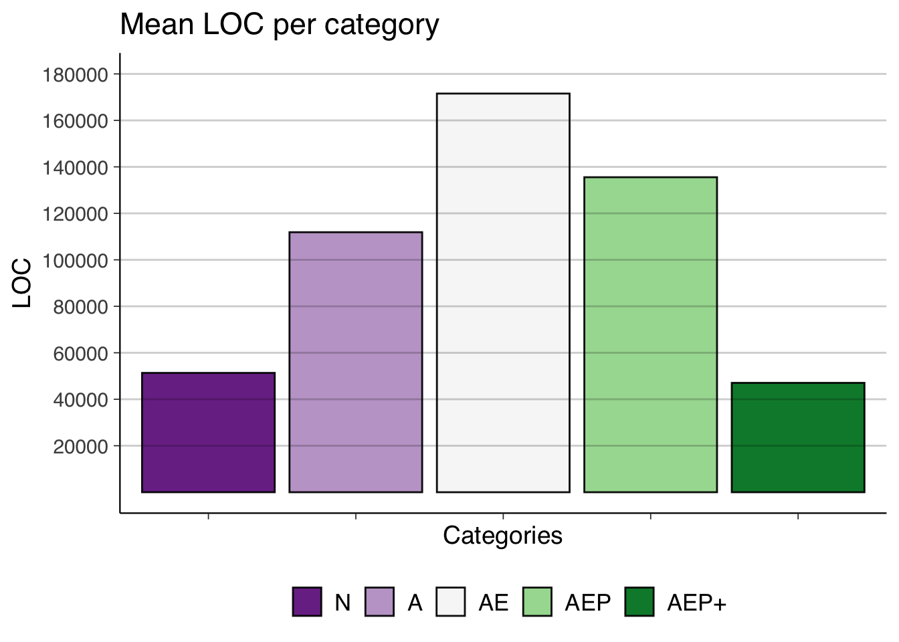
5.3.3 Stars per category
stars_per_category <- aggregate(stars ~ category, df_major, mean)
stars_per_category$category <- factor(stars_per_category$category)
major_category_summary_barplot(stars_per_category, stars_per_category$stars) +
labs(title="Mean stargazers per category", x="Categories", y="Stargazers") +
geom_hline(yintercept=1:6 * 1000, alpha=0.2) +
scale_y_continuous(breaks=1:6 * 1000)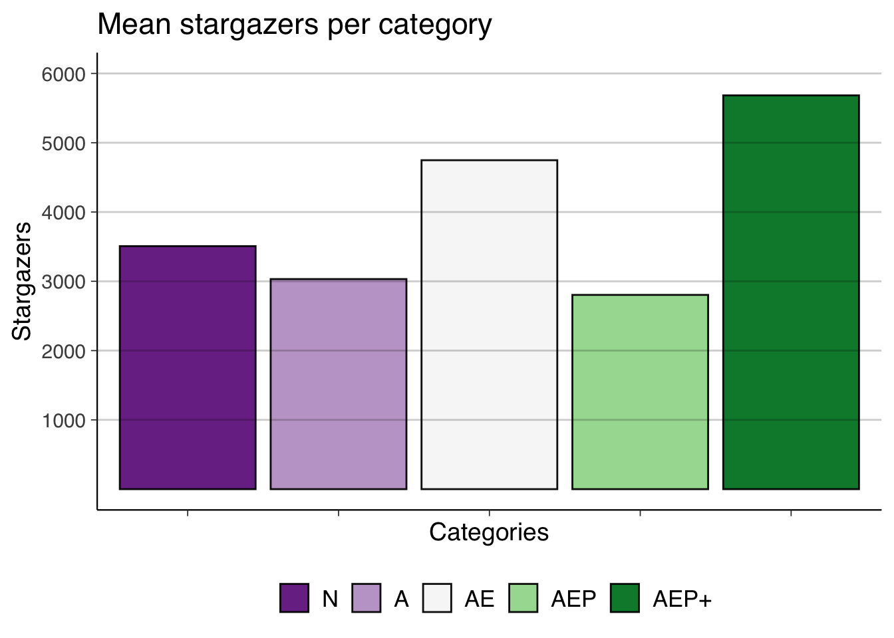
5.3.4 Age per sample
df_major$age <- get_age(df_major$created_at)
major_samples_barplot(df_major, df_major$age) +
labs(title="Overview of all major samples", x="Samples", y="Age (days)") +
geom_hline(yintercept=1:5 * 1000, alpha=0.2) +
scale_y_continuous(breaks=1:5 * 1000)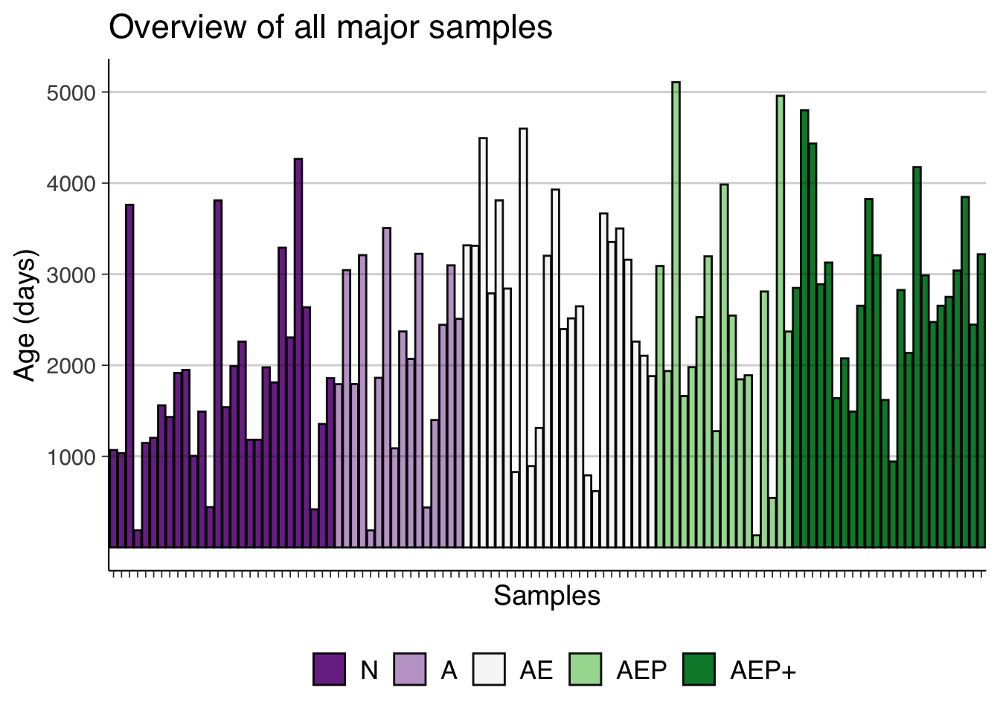
5.3.5 Age per category
age_per_category <- aggregate(age ~ category, df_major, mean)
age_per_category$category <- factor(age_per_category$category)
major_category_summary_barplot(age_per_category, age_per_category$age) +
labs(title="Mean Age per Category", x="Categories", y="Age (days)") +
geom_hline(yintercept=1:6 * 500, alpha=0.2) +
scale_y_continuous(breaks=1:6 * 500)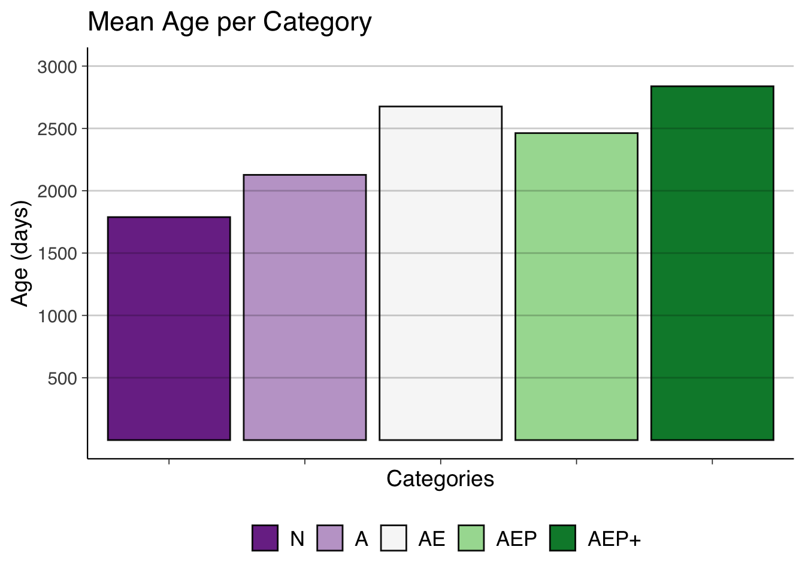
5.4 Metric summary plots
We can now use the major_samples_barplot function to plot the scaled values for every sample in the major categories.
5.4.1 Bugs
major_samples_barplot(df_major, df_major$bugs_kloc) +
labs(title="Overview of all major samples", x="Samples", y="Bugs / KLOC") +
geom_hline(yintercept=1:18 / 2, alpha=0.2) +
scale_y_continuous(breaks=1:18 / 2)
5.4.2 Code smells
major_samples_barplot(df_major, df_major$code_smells_kloc) +
labs(title="Overview of all major samples", x="Samples", y="Code smells / KLOC") +
geom_hline(yintercept=50 * 1:13, alpha=0.2) +
scale_y_continuous(breaks=50 * 1:13)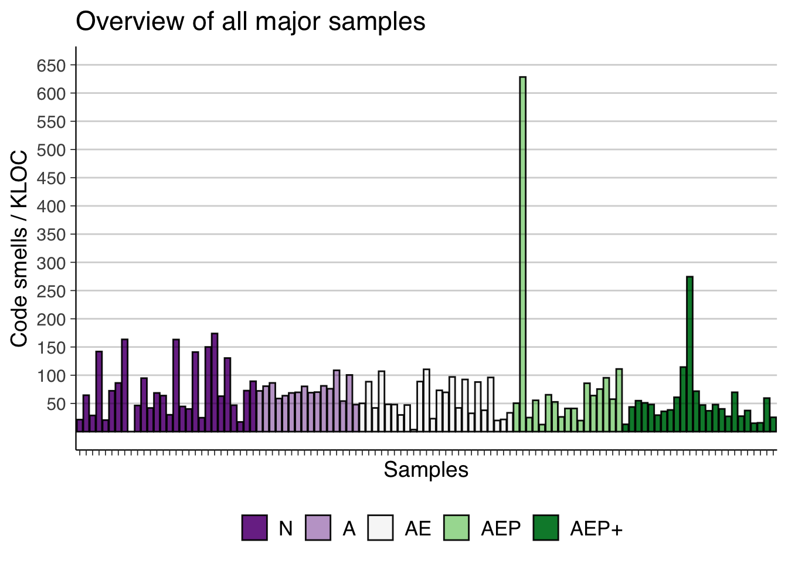
5.4.3 Critical violations
major_samples_barplot(df_major, df_major$critical_violations_kloc) +
labs(title="Overview of all major samples", x="Samples", y="Critical violations / KLOC") +
geom_hline(yintercept=10 * 1:11, alpha=0.2) +
scale_y_continuous(breaks=10 * 1:11)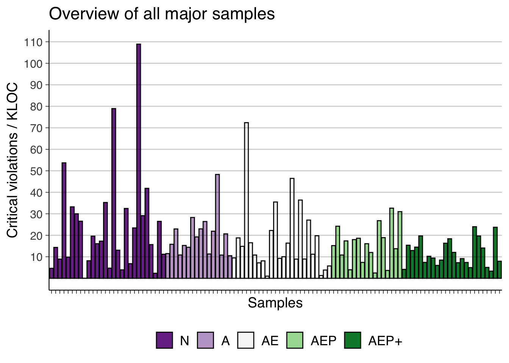
5.4.4 Major violations
major_samples_barplot(df_major, df_major$major_violations_kloc) +
labs(title="Overview of all major samples", x="Samples", y="Major violations / KLOC") +
geom_hline(yintercept=50 * 1:12, alpha=0.2) +
scale_y_continuous(breaks=50 * 1:12)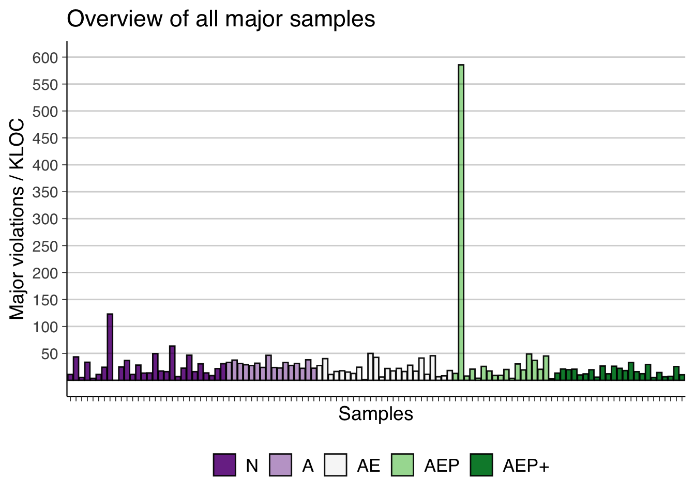
5.4.5 Minor violations
major_samples_barplot(df_major, df_major$minor_violations_kloc) +
labs(title="Overview of all major samples", x="Samples", y="Minor violations / KLOC") +
geom_hline(yintercept=10 * 1:10, alpha=0.2) +
scale_y_continuous(breaks=10 * 1:10)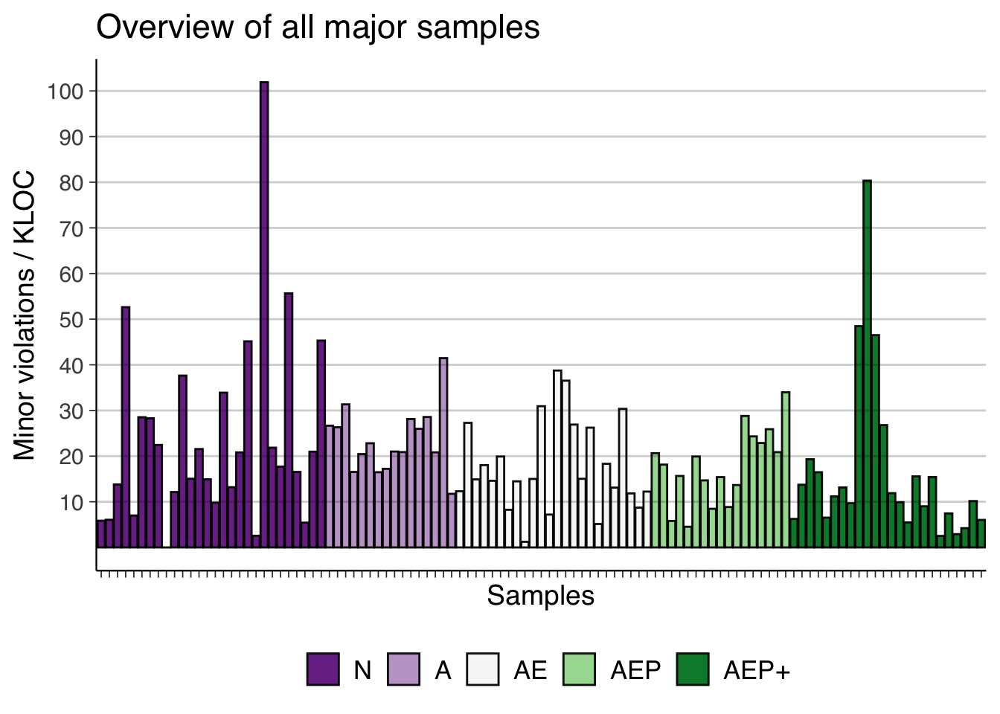
5.4.6 Security hotspots
major_samples_barplot(df_major, df_major$security_hotspots_kloc) +
labs(title="Overview of all major samples", x="Samples", y="Security hotspots / KLOC") +
geom_hline(yintercept=1:11 / 2, alpha=0.2) +
scale_y_continuous(breaks=1:11 / 2)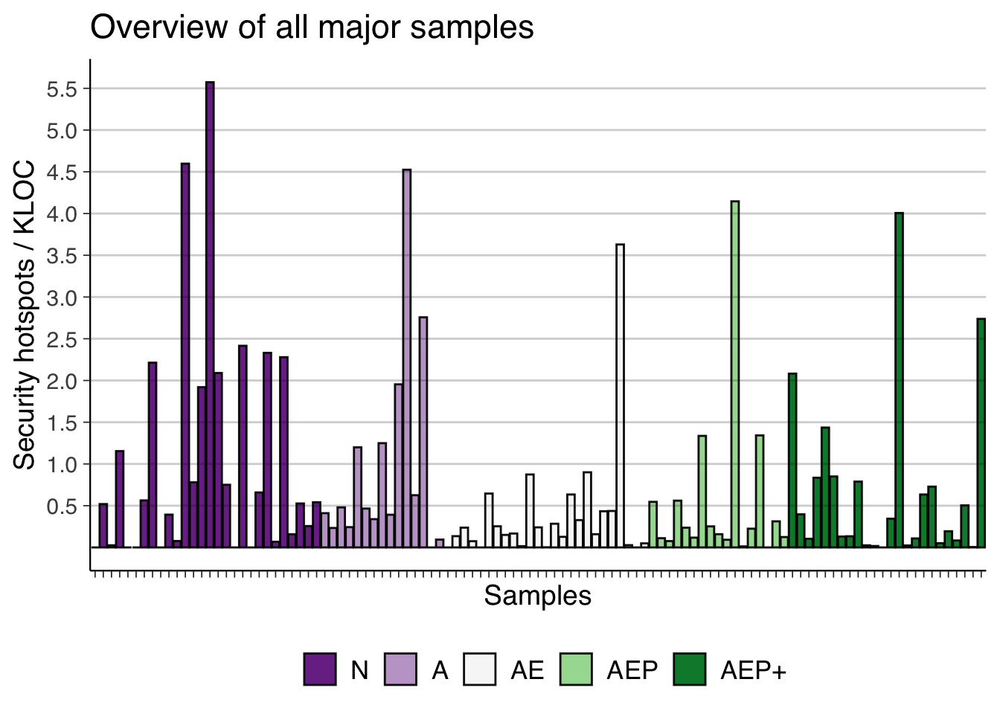
5.4.7 Vulnerabilities
major_samples_barplot(df_major, df_major$vulnerabilities_kloc) +
labs(title="Overview of all major samples", x="Samples", y="Vulnerabilities / KLOC") +
geom_hline(yintercept=1:6 / 20, alpha=0.2) +
scale_y_continuous(breaks=1:6 / 20)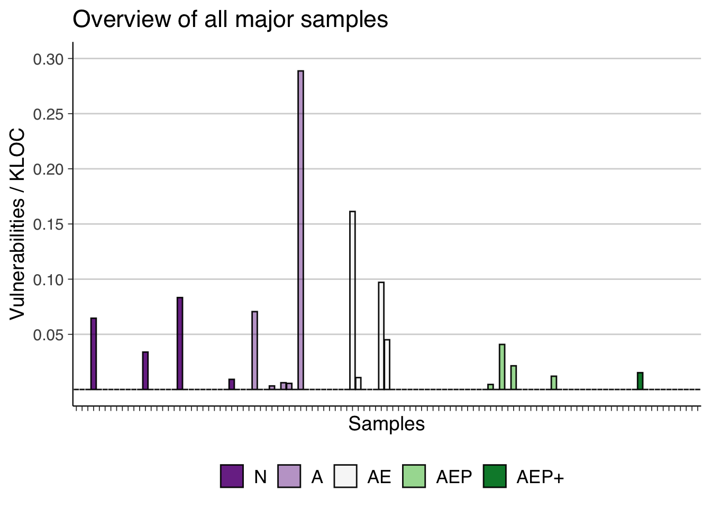
5.4.8 Cyclomatic complexity
major_samples_barplot(df_major, df_major$cyclomatic_complexity_kloc) +
labs(title="Overview of all major samples", x="Samples", y="Cyclomatic complexity / KLOC") +
geom_hline(yintercept=1:12 * 100, alpha=0.2) +
scale_y_continuous(breaks=1:12 * 100)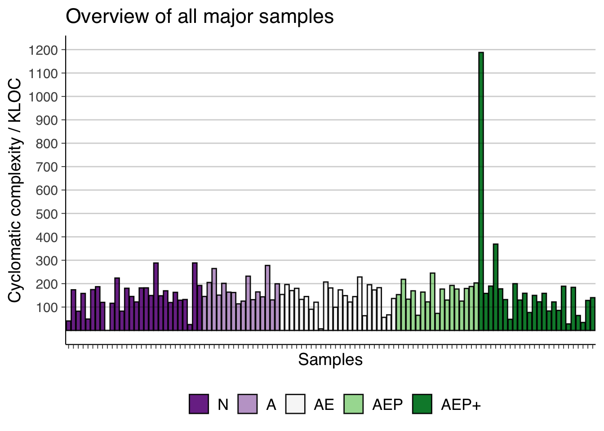
5.4.9 Cognitive complexity
major_samples_barplot(df_major, df_major$cognitive_complexity_kloc) +
labs(title="Overview of all major samples", x="Samples", y="Cognitive complexity / KLOC") +
geom_hline(yintercept=1:8 * 50, alpha=0.2) +
scale_y_continuous(breaks=1:8 * 50)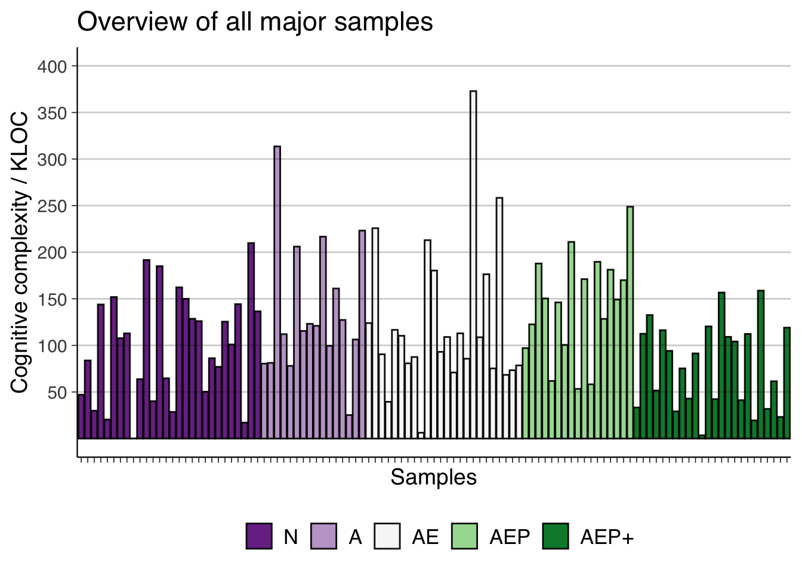